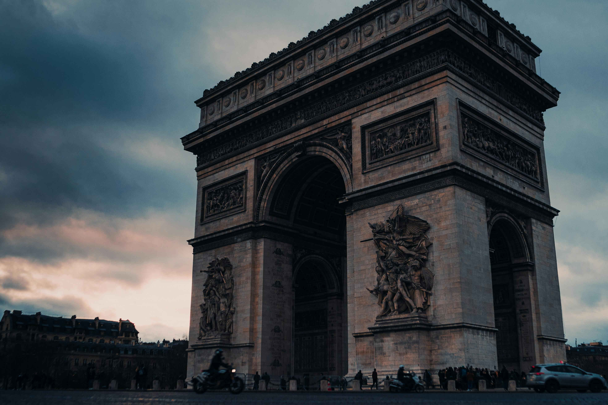
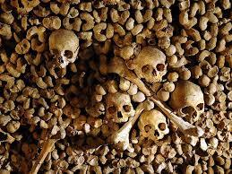

Paris: the food, the fashion, the fromage, the fantasy. No matter how many times we visit the French capital, its charms never ever grow old. And we’re not alone in thinking that. Paris is a major tourist destination that attracts thousands upon thousands of enthusiastic travellers with heads filled with images of Breton jumpers, tiny dogs, and decadent pastries - the kind you can dip in your hot chocolate. But how do you enjoy this gorgeous city without just succumbing to the age-old clichés (as much as we do love all of them)?
We’ve compiled a list of some best attractions in Paris, from the big-name ‘must-see’ paris attractions to something a little bit more bespoke and treasured locally. So whether you’re looking for lesser-known museums, late-night live music, or the best places for shopping, we’ve got plenty of ideas - and they’re all as tasty as a Ladurée macaron.
Best Paris Attractions
Eiffel Tower

The Seine river cruise

Château de Versailles

arc of La Défense
Les Catacombes
Moulin Rouge